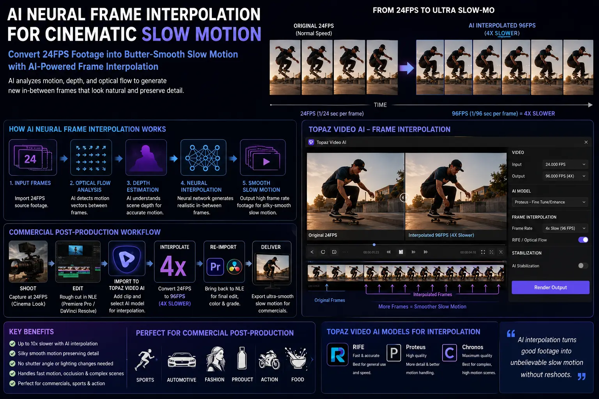
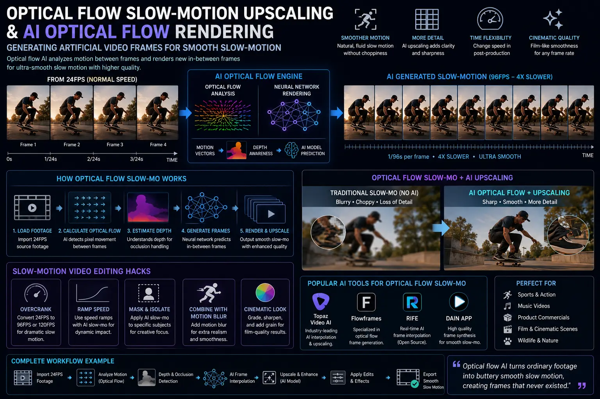

Using Optical Flow AI Neural Interpolation to Turn 24FPS Footage into Ultra-Slow-Mo
The High-Speed Cinematography Dilemma & The AI Retiming Paradigm
In high-end film production, commercial advertising, and digital brand storytelling, ultra-slow-motion has long served as the ultimate visual exclamation mark. Extending a split-second event into an agonizingly beautiful, multi-second visual experience—such as liquid splashing across a luxury perfume bottle, an athlete leaping in slow motion, or fabric fluttering in a light breeze—instantly captivates the viewer. However, historically, capturing high-speed footage required specialized high-speed cinema camera rigs like the Vision Research Phantom Flex 4K, RED V-Raptor, or ARRI Alexa Mini LF operating at 240, 480, or 1000 frames per second.
Beyond daily camera rental fees running into thousands of dollars, shooting at ultra-high frame rates presents severe physical constraints. Shutter speeds operating at 1/1000s or faster demand massive high-wattage cinema lighting setups, generate immense amounts of heat, create gigantic uncompressed video files, and limit camera mobility on set. For agile commercial shoots, mid-budget brand commercials, and high-volume digital media campaigns, capturing every potential hero shot at ultra-high frame rates is logistically impossible. Directors frequently shoot at standard 24FPS or 30FPS cinema frame rates, only to realize during editing that slowing a critical sequence down by 800% would have doubled the emotional resonance of the advertisement.
Enter the era of AI Neural Frame Interpolation and advanced Optical Flow Slow-Motion Upscaling. Modern post-production algorithms have shattered traditional hardware limitations, allowing editors to take standard 24FPS real-time camera files and stretch them into 240FPS, 480FPS, or 960FPS master shots without choppy playback or stuttering. By leveraging deep-learning neural network architectures, video creators can execute flawless temporal retiming after the camera stops rolling. This breakthrough sits at the core of High-Engagement Video Editing, empowering commercial editors to create breathtaking visual hooks that command viewer attention on television screens and social media feeds alike.
Technical Foundations: Traditional Frame Retiming vs. AI Optical Flow Rendering
To understand why AI optical flow rendering represents such a radical transformation in commercial post-production, one must compare how legacy video editing software attempted to alter timeline speed versus how modern neural models operate. When an editor slows a 24FPS video down to 25% speed (aiming for a smooth 96FPS slow-motion aesthetic), the editing sequence demands 96 frames for every second of playback, but only 24 physical camera exposures exist. Legacy Non-Linear Editors (NLEs) attempted to fill the 72 missing frames using three basic mathematical techniques:
First, Frame Duplication (Nearest Neighbor) simply repeats each recorded frame four times in sequence. This creates a jerky, stepped motion artifact that feels like low-frame-rate stop-motion rather than fluid slow-motion. Second, Frame Blending overlays adjacent frames at varying opacities to fake movement. This approach produces muddy double images, ghosting artifacts, and severe motion smudging across moving subjects. Third, Traditional Optical Flow calculates 2D pixel motion vectors from Frame A to Frame B, attempting to warp pixels linearly to fill the gaps. While far superior to frame blending, early optical flow engines struggled with complex motion—frequently producing hideous warping, digital tearing, and pixel melting whenever objects crossed paths, rotated in space, or moved behind foreground elements.
Deep-learning AI Neural Frame Interpolation overcomes these historical limitations by replacing crude linear pixel warping with trained artificial neural networks. Rather than inspecting only two consecutive images in isolation, neural interpolation models analyze multi-frame context, understanding 3D spatial geometry, foreground-versus-background depth, object occlusion, and dynamic illumination changes. The AI engine excels at generating artificial video frames from scratch, synthesizing completely new intermediate exposures with sample-accurate micro-textures, crisp edge boundaries, and zero warping distortion. As a result, the process of converting 24fps to slow motion yields pristine, broadcast-ready ultra-slow-mo that appears as if it were natively recorded on a multi-thousand-dollar high-speed camera.
10x Temporal Slow-Motion
Transform standard 24FPS real-time footage into 240FPS+ ultra-slow-motion through AI Neural Frame Interpolation without choppy playback stutter.
Zero Cinema Rig Overhead
Eliminate expensive high-speed camera rentals, specialized high-wattage lighting setups, and massive storage bottlenecks during production shoots.
Artifact-Free Frame Synthesis
Deep-learning models excel at generating artificial video frames with intelligent occlusion handling, preventing edge warping and pixel smudging.
Hyper-Engaging Visual Assets
Deploy High-Engagement Video Editing strategies that arrest scroller attention, boost social media dwell time, and elevate brand perception.

Industry Benchmarks: Topaz Video AI Frame Interpolation vs. Standard NLE Engines
When building a high-performance retiming pipeline for commercial clients, selecting the appropriate AI rendering engine is vital. While standard editing suites have incorporated basic optical flow features, specialized neural software has pushed temporal interpolation into an entirely new league of realism. Today, Topaz Video AI frame interpolation stands as an industry benchmark for enterprise-grade video retiming and spatial upscaling.
Topaz Video AI leverages dedicated deep-learning models trained on millions of high-speed cinema frames to predict pixel trajectories under extreme conditions. Their flagship interpolation architectures, such as the Apollo and Chronos models, specialize in resolving distinct retiming challenges:
- The Apollo Neural Model: Built specifically to handle complex non-linear motion vectors, overlapping subjects, camera pans, and multi-layered parallax. Apollo excels at converting 24fps to slow motion when multiple actors move across a frame or when the camera itself is in motion, preventing the edge tearing common in legacy NLE tools.
- The Chronos & Chronos Fast Models: Optimized for high-speed action, sports videography, fluid dynamics, and fine particle motion (such as dust, rain, or water splashes). Chronos focuses on maintaining sharp subject edges while generating artificial video frames at up to 16x speed reduction.
In comparison, built-in NLE features—such as DaVinci Resolve Studio’s Speed Warp (powered by the DaVinci Neural Engine) and Adobe Premiere Pro’s Optical Flow—provide convenient timeline-based options for modest speed reductions (e.g., 2x to 4x slow-mo). However, when enterprise projects require pushing standard 24FPS footage into 8x or 10x ultra-slow-motion hero sequences, offloading retiming passes to Topaz Video AI frame interpolation yields vastly superior clarity with zero visible digital artifacts.
Pro Post-Production Techniques: Smooth Slow-Motion Video Editing Hacks
While AI models perform incredible mathematical heavy lifting, achieving flawless, natural-looking slow motion requires intelligent pre-production planning and post-interpolation refinement. Senior video editors utilize a set of battle-tested smooth slow-motion video editing hacks to guarantee pristine results across demanding commercial campaigns:
Topaz Video AI Engine
- Dedicated Neural Models: Features Apollo and Chronos models engineered for complex multi-vector motion.
- Extreme Retiming: Flawlessly performs 8x to 16x frame expansion for high-end commercial master shots.
- Stand-Alone Processing: Offloads heavy GPU retiming render tasks outside your main editing timeline.
DaVinci Resolve Speed Warp
- Neural Engine Integration: Powered by DaVinci's built-in AI for seamless timeline retiming.
- Real-Time Workflow: Allows direct speed ramping and retiming curve edits on multi-track sequences.
- Color-Preserved Pipeline: Retains 32-bit float color depth and RAW camera metadata without intermediate exports.
Hybrid Commercial Pipeline
- High-Shutter Acquisition: Capture 24FPS source files at 1/250s shutter speed for crisp motion vectors.
- AI Frame Generation: Render 8x artificial frames via Topaz Video AI or Speed Warp.
- Synthetic Blur & Finish: Apply RSMB motion blur and final color grade for broadcast delivery.

Mastering the Retiming Toolkit: 4 Essential Production Hacks
To maximize visual impact and eliminate digital artifacts when executing Optical Flow Slow-Motion Upscaling, implement the following four production hacks:
1. High Shutter Speed Capture (Overcoming the 180-Degree Rule): Traditional 24FPS filmmaking relies on a 180-degree shutter angle (1/48s or 1/50s shutter speed) to introduce natural motion blur. However, heavy motion blur is the primary enemy of AI optical flow rendering, as smeared pixels blur object boundaries and confuse motion vector algorithms. When capturing standard frame-rate footage intended for AI slow-mo retiming, shoot at higher shutter speeds (e.g., 1/200s, 1/500s, or 1/1000s). Crisp, un-smeared frames provide razor-sharp edge data for neural engines to calculate motion paths with 99%+ precision.
2. Post-Interpolation Synthetic Motion Blur Compensation: Because high-shutter acquisition removes natural blur, raw interpolated frames can occasionally appear stroboscopic or hyper-sharp. After generating intermediate frames via AI, apply a synthetic motion blur pass—using tools like ReelSmart Motion Blur (RSMB) or DaVinci Resolve’s Motion Blur FX—calibrated to the new target frame rate. This reintroduces natural kinetic blur across synthesized frames while preserving razor-sharp subject detail.
3. Foreground Matte Isolation & Static Background Masking: In shots featuring complex background elements (such as foliage swaying in the wind or moving crowds behind a dynamic subject), conflicting motion vectors can trigger minor optical flow glitching. By deploying AI rotoscoping tools (such as Premiere Pro’s Roto Brush or DaVinci Magic Mask), editors can isolate the dynamic foreground subject onto a separate layer, apply AI Neural Frame Interpolation exclusively to the subject, and composite it over a locked or separately retimed background pass.
4. Speed Ramping Curves for High-Engagement Video Editing: Linear slow motion sustained over an entire 10-second clip can cause viewer disengagement. High-performing commercial edits utilize non-linear speed ramps. By playing back footage at normal 100% speed as an action begins, snapping abruptly into a 10% ultra-slow-mo freeze during the climax, and accelerating back to real-time playback, editors create dynamic visual contrast that dramatically increases video retention rates on social feeds.
Commercial Applications: Where AI Slow-Mo Drives High-Ticket Conversion
Integrating AI optical flow rendering into enterprise marketing assets directly impacts brand valuation and audience engagement across multiple commercial verticals:
- Luxury & Consumer Goods Product Reveals: When presenting high-ticket items—such as watches, jewelry, cosmetics, or artisanal beverages—macro slow-motion highlights fine textures, light reflections, and liquid pours. Transforming a routine 24FPS shot into an 8x ultra-slow-mo reveal creates an aura of opulence and high craft.
- Automotive & High-Action Commercials: Automotive spots thrive on kinetic intensity. Retiming vehicle drift spray, tire rotations, or dust kick-ups using Topaz Video AI frame interpolation adds cinematic weight to standard camera passes without requiring high-speed pursuit vehicles.
- Fashion & Apparel Motion Ads: In fashion videography, the fluid motion of fabric, hair flips, and dramatic model turns benefit immensely from converting 24fps to slow motion. Ultra-slow-mo frames showcase garment drape and motion in exquisite detail.
- Social Media Curiosity Hooks: On short-form platforms like Instagram Reels, TikTok, and YouTube Shorts, displaying unexpected micro-moments in ultra-slow motion creates immediate visual friction, halting scrollers and driving completion metrics.
Step-by-Step SOP: Enterprise Workflow for AI Slow-Motion Retiming
To execute artifact-free retiming across your commercial pipeline, adopt this structured 5-step Standard Operating Procedure (SOP) used in top-tier commercial post-production studios:
- Step 1: High-Shutter Source Acquisition: Record 24FPS or 30FPS source footage at 1/250s shutter speed or faster. Ensure clean lighting and minimize camera sensor noise, as grain can degrade optical flow accuracy.
- Step 2: Temporal Noise Reduction Pre-Pass: Import raw camera clips into your NLE. If footage contains high ISO digital noise, apply a temporal noise reduction pass (e.g., Neat Video) before retiming. Clean exposures significantly improve neural vector calculation.
- Step 3: Neural Model Retiming Pass: Export target clips as uncompressed ProRes 422 HQ or DNxHR files. Ingest into Topaz Video AI frame interpolation (selecting Apollo or Chronos) or apply DaVinci Resolve Speed Warp. Set desired speed reduction (e.g., 25% for 4x slow-mo, 12.5% for 8x slow-mo).
- Step 4: Synthetic Motion Blur & Compositing: Re-import synthesized ultra-slow-mo masters into your sequence. Apply RSMB or NLE motion blur compensation. If background artifacts exist, rotoscope the foreground subject and composite over a clean background pass.
- Step 5: Speed Ramping, Color & Final Master: Apply velocity curves for dynamic speed ramping transitions. Complete primary and secondary color grading, add audio foley sound design to match slow-mo motion, and export 4K broadcast masters.
Conclusion: Transforming Standard Footage into Cinematic Masterpieces
The era when capturing breathtaking ultra-slow-motion required tens of thousands of dollars in high-speed camera rentals, massive lighting crews, and constrained set logistics is officially over. AI Neural Frame Interpolation and advanced Optical Flow Slow-Motion Upscaling have democratized high-speed cinematography, granting post-production teams the creative freedom to manipulate temporal playback during edit assembly.
By leveraging dedicated engines like Topaz Video AI frame interpolation, mastering AI optical flow rendering, deploying smooth slow-motion video editing hacks, and understanding the science of generating artificial video frames, modern brands can consistently deliver High-Engagement Video Editing that commands attention and drives high-ticket conversions.
At The PhD Ads in Madurai, we specialize in high-impact video production, AI-assisted post-production workflows, and commercial post-production strategies designed to scale brand authority and maximize marketing ROI.
Key Topics
Ready to Transform Standard Footage into Ultra-Slow-Mo Cinema?
At The PhD Ads in Madurai, we help brands, commercial directors, and marketing teams leverage High-Engagement Video Editing, AI Neural Frame Interpolation, and cutting-edge commercial post-production techniques to turn standard footage into mesmerizing slow-motion visual masterworks.
Email: team@e2o.in